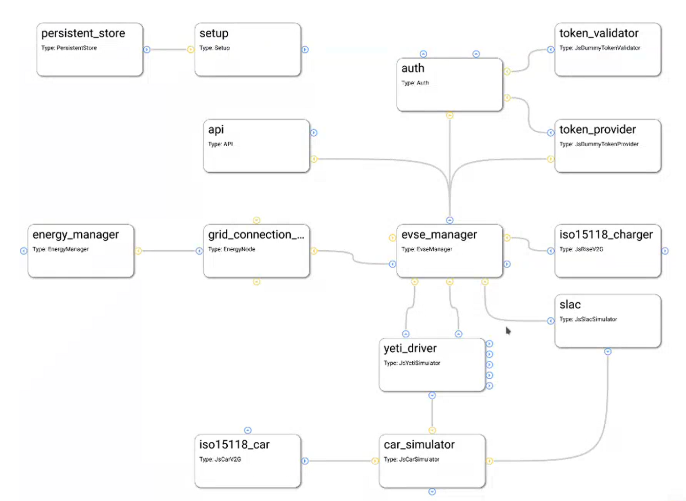
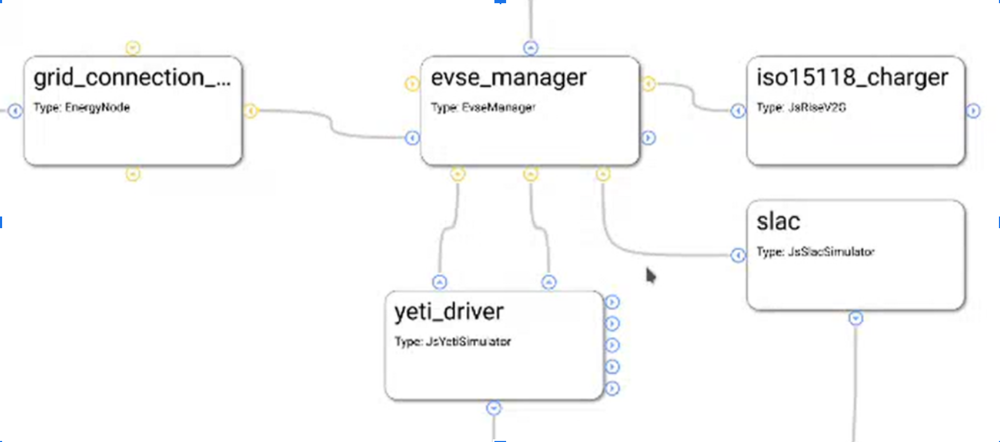
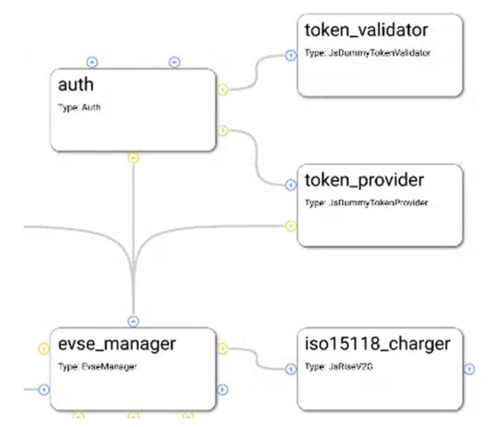
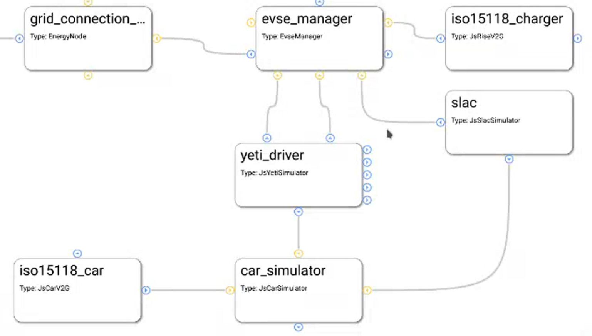

5. EVerest Modules¶
In the following, we will dive into some exemplatory scenarios to show how modules can interact with each other.
Additionally, also a place for explaining module features in more detail will grow here.
5.1. Module connections for dedicated use cases¶
EVerest is a modular framework.
For devices like powermeters or hardware boards, you will have implementations as a driver module. Energy management logic, authentication or protocol implementations - everything is delivered (or can be implemented by you) via a module.
The real magic of EVerest will be unleashed by wiring those modules together. Based on the connections of modules, the core modules of EVerest will provide fancy stuff like automatic power-sharing between multiple EvseManagers or the correct representation of the charging environment inside the backend instances via OCPP.
To understand connections for different use cases and how to map hardware scenarios to EVerest configurations, let’s have a look at some simple connection scenarios and step by step walk on to some more complex ones.
If you want to have a very quick overview without the details, see the upcoming section. We will go more into detail in the other sections.
5.1.1. Quick overview¶
Start analyzing this picture at module evse_manager.
To the right, you will see two protocol implementations for ISO 15118 and SLAC. (This picture will be updated soon as the JsRiseV2G module is deprecated.)
At the bottom of the EvseManager, the yeti_driver module is the implementation of the board support but also provides an implementation of a powermeter.
The connection from the Yeti driver to the ‘car_simulator’ module is only needed in simulation scenarios and will not be used in production scenarios.
The EvseManager has a connection to the authentication functionality on top of it. A token_provider (e.g. a driver for an RFID device), a token_validator (checking if tokens are valid) and an auth module decide if energy is allowed to be delivered via one of the connected EvseManagers.
The connection from EvseManager to the left is the source of power that is needed for the charging process to work - eventually with energy management logic.
All this will now be explained in much more detail including the modules in the picture that we haven’t talked about yet.
5.1.2. Charging station and charging points¶
The EvseManager module is the central module for an EV charging scenario. It represents one charging point.
An EvseManager will need protocol implementations, hardware drivers and a grid connection to work in a meaningful way.
See this simple part of a module network:
TODO: Clean deprecated ISO15118-Rise-Module! Make pictures in EVerest CI.
The picture above shows a part of a module configuration from the EVerest Admin Panel. Yellow connection points show requirements for interface implementations, blue ones show interface implementations that the module provides. For more information on that, see the Module Concept page.
The EvseManager has basic charging logic implemented (IEC 61851, PWM State Machine). It knows the status of the current charging session regarding time of charging start, point of times to pause the session or the amount of energy already delivered to the output.
For measuring the energy, a powermeter is necessary. The Yeti Driver module in the example above is a board support implementation, but also delivers an implementation of a powermeter. This is why you see two connections between the EvseManager and the YetiDriver: Each connection stands for one interface implementation that is provided from one module to another one that requires it.
This way, you could connect another powermeter module but keep the Yeti Driver module for board support. That makes things nicely flexible.
Another two connections go from the EvseManager to two protocol implementations: ISO 15118 and SLAC. Such connections to protocol implementations allow the EvseManager to “talk” to other devices using that protocol. E.g. if you connect the EvseManager via the board module to a car, the car also needs to “know” about ISO 15118 so that communication can work.
The connection to the left is needed for the EvseManager to get power from somewhere. In the example above, the grid connection module will deliver energy. This is the part where in more complex scenarios an energy management logic can be set up or loadbalancing between more than one EvseManagers will take place.
5.1.3. Authentication for charging¶
For a power consumer to be allowed to take energy out of a charging point, we will need some kind of authentication mechanism. Let’s take a look at the following part of an EVerest configuration:
{kind=link}
We already know the two modules at the bottom of the picture. You can see the auth module, which obviously plays a big role for authentication. This module provides an implementation for managing authentication but also reservation of charging points.
Easily put, the auth module takes an authentication token, gives the token to some instances which can validate tokens and as soon as a validation arrives, the auth module chooses an EvseManager to be activated for charging.
This has now already explained the roles of the token provider and validator modules. A token provider could be a driver implementation of an RFID device which delivers an identification number. The token validator checks if it can identify a token as an allowed consumer for energy.
The auth module can have multiple token validators which will be called one after the other. If one of them can validate the token, power can flow.
5.1.4. Car simulation¶
One big strength of EVerest is the integrated possibility to allow for simulating real world scenarios with a charging car connected to an EVSE.
Simply connect a car_simulator module to the board support module of an EvseManager like shown here:
{kind=link}
The modules in the upper part of this picture have been described earlier. The car_simulator takes the role of a car to enable proper communication between car and EVSE.
In fact, this simulates the voltages and the PWM duty cycle. (Hint: If you start a Node-RED simulation with EVerest, the car simulator module is the instance that controls the simulation regarding charging power and charging status).
As the EvseManager “talks” ISO 15118 in this example (see the connection of the iso15118_charger module), it makes sense to also enable ISO 15118 for the car simulation. The iso15118_car module does exactly that.
One interesting detail is the connection of the SLAC module not only to the EvseManager but also to the car simulation module. This is due to the fact that SLAC sets up the physical communication between the EVSE and car (simulation).
5.1.5. Energy management¶
TODO Show energy management scenario. Show multiple EvseManager configurations.
5.2. Module functionality in detail¶
TODO: This section is yet to be created. Existing module documentation listed here are eventually to be updated.